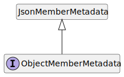

Interface ObjectMemberMetadata
interface ObjectMemberMetadata {
deserializer?: ((json, params) => any);
emitDefaultValue?: boolean;
isRequired?: boolean;
key: string;
name: string;
options?: MemberOptionsBase;
serializer?: ((value, params) => any);
type?: (() => TypeDescriptor);
}
deserializer?: ((json, params) => any);
emitDefaultValue?: boolean;
isRequired?: boolean;
key: string;
name: string;
options?: MemberOptionsBase;
serializer?: ((value, params) => any);
type?: (() => TypeDescriptor);
}
Hierarchy-Diagram
{kind=link}
Legend
 interface
interface
Hierarchy
- JsonMemberMetadata
- ObjectMemberMetadata
Index
Properties
Optional deserializer
deserializer?: ((json, params) => any)
Type declaration
- (json, params): any
Parameters
- json: any
- params: CustomDeserializerParams
Returns any
Optional emit
emit
If set, a default value will be emitted for uninitialized members.
Optional is
is
If set, indicates that the member must be present when deserializing.
key
key: string
Property or field key of the json member.
name
name: string
Member name as it appears in the serialized JSON.
Optional options
Optional serializer
serializer?: ((value, params) => any)
Custom serializer to use.
Type declaration
- (value, params): any
Parameters
- value: any
- params: CustomSerializerParams
Returns any
Optional type
type?: (() => TypeDescriptor)
Type descriptor of the member.
Type declaration
- (): TypeDescriptor
Returns TypeDescriptor
Custom deserializer to use.